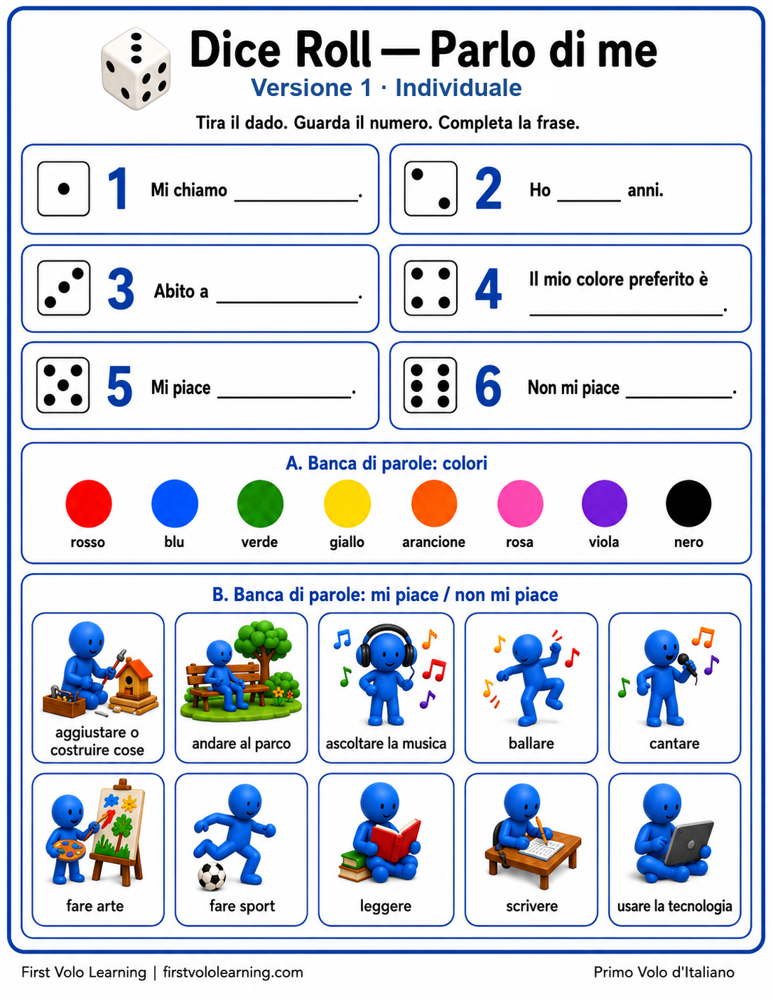

Gioco di conversazione · Speaking Game
Dice Roll · Parlo di me
Presentazioni e preferenze
Un gioco stampabile con dado per praticare presentazioni, età, luogo, colore preferito, Mi piace... e Non mi piace....
Due modalità nello stesso PDF: una versione supportata e una versione a coppie con domande e risposte.
📄 2 pagine · 2 pages
🎲 Dado · Dice
👥 Individuale + coppie · Individual + Partner
Pratica · Practice: produzione orale, domande e risposte, presentazioni personali e preferenze.